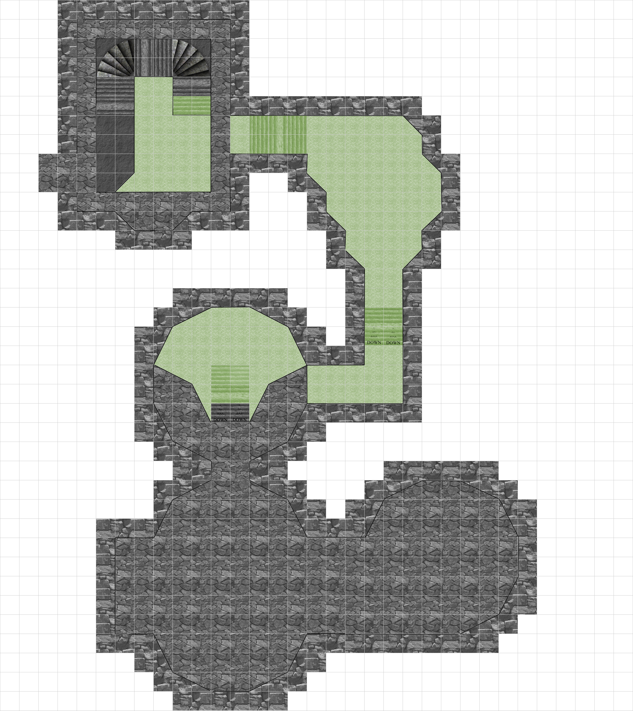

Regardless of how the party chooses to delve into the mysterious ruins, they attempt to go through the entrance first. They find it partially collapsed and have to squeeze their way into the crumbling grand antechamber.
Grand Antechamber
Quick version: A vaulted hall, cold and damp, lit by the uneasy red glow of shattered sconces. Broken statues and a corroded, blood-streaked grate ring a floor littered with bones and faded mosaics. There's no obvious way through.
Expanded, if you have the room for it: Once a grand hall but now… a vaulted hall, abandoned. The air is cold and damp. Faded mosaics decorate the cracked stone floor. Scraps of molded tapestries still cling to the walls. A corroded grate yawns in the center of the floor, streaked with dark stains. Condensation trickles down the walls and pools across the slick stones, carrying the faint smell of rot. Red crystals flicker weakly from shattered sconces, throwing the chamber into an uneasy glow. Broken statues loom along the edges of the room. Some faceless, others toppled. Chains and bones litter the floor, silent reminders of grim ceremonies past. From above, loose stone groans softly in the vaulted ceiling. There appears to be no way through.
Dungeon Features (Antechamber, Sewers, Dining Hall)
- Most rooms are dimly lit by crystal-powered sconces that function as turrets, dealing 1d4+4 necrotic damage every round until their crystal is removed. Once removed, the room goes dark.
- A phosphorescent moss grows throughout the sewers, dining hall, and antechamber. DC 10 Nature check reveals it flourishes best fed by blood but can survive on decaying flesh.
- The whole complex smells of decay, rot, and mold from ruined tapestries, carpets, and old carcasses.
- High ceilings echo. At the start of combat, choose ten random map areas. Roll a d10 at the end of every round of combat to see if that section's ceiling falls (see Falling Rubble, below).
- Perception checks are at disadvantage without darkvision throughout the dungeon — call this out early, it matters for the sconces.
The red crystals powering every sconce in the dungeon are the same substance as the crystals the Wizard and Sorcerer pregens are hunting for their crystal-powered sword hooks. A harvested sconce crystal (DC 14 Arcana to recognize it, or the party just asks Selvos/Zyra) is a legitimate lead toward the Treasury (Part Three), not just a disabled trap.
Combat: Grand Antechamber
Puzzle Deadly if fought head-onFire arrows of necromantic energy from the two red, glowing crystals in the shattered sconces until the crystals are removed or destroyed.
Disable. DC 14 Arcana or Dexterity (Thieves' Tools). On a failure, the crystal explodes for 8 necrotic damage (DC 14 Dex save for half).
A creature that stays outside the sconce's 25 ft. range and out of direct line of sight is never targeted. Parties who scout before entering (Perception/Investigation to spot the crystals from the doorway) can route around both sconces entirely rather than fighting or disabling them.
Fought head-on, two sconces swing from Deadly (party of 3, level 3) down to Easy (party of 6, level 5) — the same stat block, radically different threat depending on your table.
| Party | Suggested Adjustment |
|---|---|
| 3 players, level 3 | Run as written, or drop to 1 sconce if your table is cautious — two is genuinely Deadly if fought instead of bypassed. |
| 4–5 players, level 3 | Run as written. |
| Any size, level 4–5 | Add a third sconce, or raise damage to 1d6+4 per hit, to keep the room a genuine threat rather than a formality. |
| 6 players, any level 3–5 | Add a third sconce covering the room's far corner — two sconces can't meaningfully threaten six actions per round. |
Broken Guardians. Worn statues, animated by the Court's residual dark side energy. Clamors to life when an adventurer comes within 60 feet, demanding the passerby swear to rise in resistance against the light (x1 guardian). It grinds and clamors as it attacks, bellowing fealty to the King and Queen of Undying Darkness.
Note: eight statues line the chamber. Only one attacks now — a warning shot, meant to foreshadow the rest rising in greater numbers later. Two more Guardians (reskinned) appear as Undead Arena Champions in the Dining Hall/Arena.
Suggested statline: use the Animated Armor stat block (AC 18, HP 33 (6d8+6), immune to poison/psychic and most conditions, Multiattack: two Slam attacks, 1d6+2 each). Reflavor as crumbling stone rather than metal.
A creature that speaks the oath of fealty aloud (even falsely) causes the nearest guardian to pause instead of attacking. Contested Deception vs. the guardian's passive Insight (10): success and it stands down for the encounter; failure and it attacks with advantage on its first hit, having caught the lie.
A convincing oath is remembered. Reference it if the party returns to this room later.
One guardian is Easy at every party size 3–6, level 3–5 — it's meant to be a taste, not a fight. Scale the taste, not just the later payoff:
| Party | Suggested Adjustment |
|---|---|
| 3 players, level 3 | Run as written — one guardian. |
| 5–6 players, any level | Two guardians instead of one; still a taste, but registers against more actions in the room. |
| Any size, level 4–5 | Add a Multiattack bonus action (a third Slam at disadvantage) to keep pace with better AC/saves. |
Hazards & Interests: Grand Antechamber
- Wet Floors. DC 10 Dex (Acrobatics) to avoid slipping prone while dashing.
- Pressure Plate (near grate). Hidden beneath pooled water and mushrooms. DC 14 Investigation/Perception to notice. Trigger releases necrotic dart from an old arrow slit. 1d10 necrotic, +4 to hit.
- Falling Rubble. Random chance each time combat or a loud action occurs (10% per round, d10). Falling stone strikes one creature in a 10 ft. radius. DC 13 Dex save or 2d6 bludgeoning.
- Drain Grate. DC 5 Perception to notice. Lifts to drain grate to sewers. DC 18 Strength check for one creature, or two creatures can group check (both DC 12).
- Collapsed Stairs. DC 5 Investigation/Perception reveals that at some point someone on the second story threw large rocks down the stairs (possibly to repel invaders), collapsing them. Climbing requires DC 15 Athletics. On a success, a creature clears half the debris before the stairs collapse further and the creature falls (1d6 bludgeoning, prone). This also triggers a Falling Rubble check.
- Mosaics. Arcana or Religion DC 13 reveals the cracked, faded mosaics show blood sacrifice ceremonies, necromantic rituals, and blood sports — a clue pointing toward the Dining Hall/Arena.
Treasure (Grand Antechamber Corpses)
After ten minutes of careful searching among the corpses, broken statues, and toppled shelving, roll or choose from the table below. A single search can surface multiple tiers if the roll clears them.
| DC | Find |
|---|---|
| 8 | A bag of 1,000 ball bearings, scattered but recoverable |
| 10 | A piece of turquoise on a thick gold chain (12 gp) |
| 12 | Coin purse, still containing 300 sp |
| 14 | Silk pennant trimmed with fox fur (10 gp) |
| 16 | Feathered shortsword scabbard (10 gp) |
| 18 | Pewter flute (10 gp) |
| 20 | Amulet of Water Breathing (uncommon; DMG 150, requires attunement) |
| 22 | Carved wooden bowl (10 gp) |
| 24 | 3× Potion of Climbing (common) |
A DC 20 Investigation check (or higher) always includes the Amulet of Water Breathing and the original 12 gp turquoise chain find from the corpse search. Keep those as your guaranteed anchor items regardless of what else the table yields, so the room's existing hooks stay intact — the amulet is also a fair, in-fiction nod to what's coming next: the party is about to go swimming.
The only way to continue past the grand antechamber is through the large drain and into the sewers. Navigating the old, overflowed sewage system requires some swimming, some Constitution DC 10 saving throws, and the possibility of trench foot.

Running this room: The sewers are mostly a gauntlet, not a set-piece fight. Consider 1–2 short encounters (rot-touched vermin, a lurking ooze grown fat on the moss) plus the swimming/Con save gauntlet described above. If your table wants combat here, reuse the Broken Guardian stat block once, damp and rusted.
The Sewers aren't meant to threaten a TPK — the swimming, Con saves, and short fights below are meant to cost HP, spell slots, and resources before the Dining Hall, not to be a hard fight on their own.
DC 10 Con saves are real friction for a level 3 party and background noise for level 5 characters with better Con saves and more HP to spare.
| Party | Suggested Adjustment |
|---|---|
| Level 3, any size | Run as written — DC 10 costs real resources here. |
| Level 4–5, any size | Raise the swimming save to DC 12–13, or add a second save partway through, so the gauntlet still drains something. |
| 6 players, any level | Add a second short encounter (vermin or ooze) — more actions in the party means the sewers clear faster than intended otherwise. |
A churning mass of disease-bloated rats, boiling up out of a side pipe when the party's noise (or blood) draws them. Use SRD Swarm of Rats as-is; the "rot-touched" flavor is cosmetic.
Swarm can occupy another creature's space and vice versa; resistant to bludgeoning/piercing/slashing; immune to being frightened/grappled/paralyzed/petrified/prone/restrained/stunned. Half damage once reduced below half HP (no swarm below 1 creature's worth of space).
Prefer individual bodies instead of a swarm stat block? Use 3–4 SRD Giant Rats (CR 1/8 each; AC 12, HP 7 (2d6), Bite +4 to hit, 1d4+2 piercing; Pack Tactics) instead.
Grown fat on the sewers' phosphorescent moss, this ooze blends seamlessly with wet stone until something brushes past it. Use SRD Gray Ooze as-is.
Amorphous. Can squeeze through a 1-inch gap. Corrode Metal. Any non-magical weapon that hits it corrodes; on a hit against the ooze, metal armor/weapons touching it take a cumulative −1 penalty unless they're immune to acid damage. False Appearance. Indistinguishable from a wet patch of floor or stone while motionless.
The Sunken Hearth (Sewers Side-Chamber)
Reached through a second, smaller drain the party isn't required to take — a genuine branch off the main gauntlet, not a detour that gates progress. If your table wants a prompt to find it: a DC 12 Perception check while wading through the tunnels notices a current of clean, cold air where there shouldn't be one.
Quick version: The tunnel narrows, then opens into a low hollow that has nothing in common with the sewers behind you — older, rougher stonework, and a basin of black, still water at its center. Alcoves ring the walls, each holding a sealed clay urn, save for two standing empty near the entrance.
Expanded, if you have the room for it: Once you're through the collapsed drain, the tunnel narrows, then opens into a low hollow that has nothing in common with the sewers behind you. The masonry here is older — rougher, rounder, without the Court's sharp right angles. A basin of black, still water sits at the chamber's center, long dry of whatever spring once fed it, its rim carved with vine and hoof motifs worn nearly smooth. Alcoves ring the walls, each holding a sealed clay urn — save for two, near the entrance, standing empty. Someone built the Court's foundation directly into and over this place, and didn't bother to ask what it was first.
What this room is. Long before the King and Queen raised their palace, this was a sacred spring, tended by a satyr community who lived and died here in the open — pyres, not tombs. The Court's builders walled the spring into a cistern and used the older stonework as a foundation without ceremony. The urns are grave goods, not treasure in the dungeon's usual sense: ash, gold funerary masks, jewelry, and coin left for the dead rather than the living.
The empty alcoves. A DC 13 Investigation or Perception check notices the dust pattern is wrong at the two empty slots — disturbed recently, not centuries ago, and the urns that stood there are simply gone. No further explanation here; the party won't have reason to connect it until they reach the Dining Hall/Arena and find two grave urns sitting among the Court's own trophies.
Running this room: This is a beat, not an encounter — no combat is required here, and it plays best if you let it breathe. Keep the prose gentler than the rest of the dungeon: less rot-and-decay horror, more hushed reverence. The contrast is doing narrative work — it reframes "corrupted grandeur" once the party sees what the grandeur was built on top of.
If Serai Thalos is in the party, her Anachronistic Knowledge background feature triggers here with no roll required: she immediately recognizes the hoofprint carvings, the open-air pyre-and-urn interment style, and that this predates the Court by a wide margin. This is her moment — let her carry the scene. A History check at her doubled proficiency (or Arcana/Religion, DM's call) can surface more: roughly how long ago, what the vine-and-hoof motifs signify, whether this was a large settlement or a small shrine.
Don't confirm whether these were specifically her people. Let her be certain of the era and the culture, uncertain of the rest. That keeps her Bond ("someone else was also sent through time when I was — I need to find that person") open as a thread rather than closing it in a side room; it's a stronger beat for a later session than a one-shot payoff.
If Serai isn't in the party, any character can piece this together with a DC 15 History or Religion check — just without the certainty or the color she'd bring to it.
Treasure (The Urns)
Twelve sealed urns line the alcoves; opening one is free, but a proper search of its contents calls for an Investigation check. Roll or choose from the table below. Each urn yields one result, so a DM running this as a "search several urns" scene can call for the check once per urn opened.
| DC | Find |
|---|---|
| 8 | A scatter of worn silver coin, unfamiliar in mint (roughly 15 sp equivalent) |
| 10 | A single silver piece, tarnished black, tucked beside the ash |
| 12 | A Shabti funerary figurine, carved in the likeness of the deceased |
| 14 | A polished hematite or obsidian stone, worn smooth from handling (10 gp) |
| 16 | A Heart Scarab, carved bone or horn rather than beetle-shaped (18 gp) |
| 18 | A bloodstone or star rose quartz set in a thin gold wire (25 gp) |
| 20 | A carnelian pendant (25 gp) |
| 22 | A Potion of Healing (common; DMG 187), sealed in wax |
The set-apart urn near the basin (see Serai Hook, above) holds ash only — no item. Whatever was buried with this occupant mattered more for who they were than what they owned.
The toll-coins. The loose coin among the grave goods isn't stamped with any currency the party will recognize. A DC 12 History or Religion check identifies them as Charon's obols — coins left with the dead to pay passage across the boundary, not currency meant to be spent. Without the check, the party can still sense something's off (spending it feels wrong even before anyone says so out loud), but the check is what turns that unease into certainty. Either way, play what happens next as a roleplay beat rather than a mechanical restriction: let the party decide for themselves whether to take it.
This room predates the Court entirely, which makes it a clean seed if you're building toward Shaen Orvo's Persistent Nodes idea (see Turning This Into a Campaign) — a site with its own history the Court's corruption never touched, sitting quietly beneath the one that did.
If you want a longer dungeon, this is the easiest place to insert an extra level. The sewers can branch toward a second entrance or a smuggler's cache — the Sunken Hearth above already covers the "sealed chamber that predates the Court" idea.